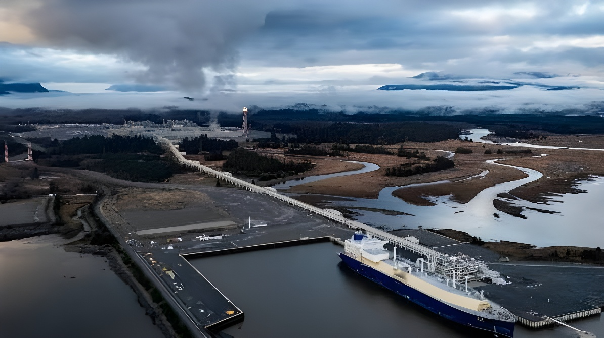

Le 29 septembre 2026, les partenaires de LNG Canada ont pris la décision finale d'investissement sur la phase 2 de Kitimat (Colombie-Britannique), un projet de 33 milliards de dollars canadiens qui doublera la capacité de l'usine, de 14 à 28 millions de tonnes de GNL par an. Le 1er octobre, Mark Carney a désigné le pipeline de pétrole vers la côte Ouest, rebaptisé Pacific Link, premier projet d'intérêt national au titre de la Loi visant à bâtir le Canada. Mais l'usage d'acier chinois pour une partie du chantier nourrit une polémique sur la politique d'« achat canadien ».
Shell (40 %), PETRONAS (25 %), le chinois PetroChina (15 %), Mitsubishi (15 %) et le coréen KOGAS (5 %) ont approuvé l'extension de l'usine de Kitimat, sur le territoire traditionnel de la nation Haisla. Elle ajoute deux trains de liquéfaction, un réservoir de stockage, un réservoir de condensat et un poste de chargement, ainsi que cinq stations de compression sur le gazoduc Coastal GasLink (670 km). La mise en service est attendue au début des années 2030.
Le chantier mobilisera jusqu'à 4 000 emplois de construction à Kitimat au plus fort des travaux et environ 2 100 pour les stations de compression ; l'exploitation créera ensuite environ 90 postes permanents et 150 postes de sous-traitants. Une participation autochtone pouvant atteindre 1 milliard de dollars dans le futur réservoir de GNL devient aussi possible. Selon Carney, ce serait la deuxième plus grande installation de ce type au monde.
L'acier chinois utilisé pour la phase 1 suscite déjà la controverse ; les droits de douane alors en vigueur ont expiré après cinq ans, sans être renouvelés.
Décision finale d'investissement sur la phase 2 de LNG Canada.
Pacific Link devient le premier projet désigné d'intérêt national.
LNG Canada confirme l'usage d'acier chinois pour des modules ; les conservateurs dénoncent une contradiction avec « achetons canadien ».
Dépôt attendu du document d'information du projet Pacific Link, qui ouvre l'examen réglementaire.
Date visée pour arrêter les conditions du projet avant le début des travaux.
Le 1er octobre, à Fort McMurray (Alberta), Mark Carney et la première ministre albertaine Danielle Smith ont désigné le pipeline de pétrole vers la côte Ouest, au titre de la loi issue du projet de loi C-5. Long de 1 200 km entre Bruderheim (Alberta) et Delta (Colombie-Britannique), il doit transporter environ un million de barils de plus par jour, surtout vers l'Asie. « Aujourd'hui, 90 % du pétrole albertain va aux États-Unis », a rappelé Carney. La désignation accélère les autorisations : les conditions doivent être arrêtées d'ici septembre 2027, pour une mise en service visée en 2032-2033.
Les réactions sont partagées. Les milieux d'affaires saluent un pas vers de nouveaux marchés ; le chef du NPD, Avi Lewis, juge le projet contraire à l'intérêt national, des groupes environnementaux le disent irresponsable et certaines Premières Nations s'inquiètent de la consultation et jugent 10 % insuffisants. Le gouvernement s'attend « probablement » à des recours en justice. La Colombie-Britannique, opposée au projet, a indiqué qu'elle ne le contesterait pas.
LNG Canada explique que la phase 2 exige des modules d'une fabrication spécialisée que le Canada ne peut pas fournir : ils seront assemblés en Chine puis acheminés par mer jusqu'à Kitimat, l'accès maritime étant jugé essentiel. Pour les stations de compression du gazoduc, l'entreprise vise près de 15 000 tonnes d'acier canadien, soit environ 70 % des besoins. Elle précise qu'aucun droit de douane ne frappe actuellement ces composants chinois.
Interrogé le jour de l'annonce, Carney a renvoyé la décision aux promoteurs, tout en assurant que l'acier canadien restait pleinement disponible. Les conservateurs y voient un nouvel échec de sa politique d'achat canadien.
Les deux annonces répondent à la même logique : réduire la dépendance envers un client américain devenu imprévisible en ouvrant l'Asie au gaz et au pétrole canadiens. Elles en montrent aussi les limites : un projet vitrine dont des modules sont fabriqués en Chine et dont un partenaire est chinois, un pipeline qui reste à financer et à faire accepter par les Premières Nations et la Colombie-Britannique, des échéances qui renvoient aux années 2030. Au moment où les relations avec Washington se tendent, la sécurité économique du Canada se joue autant dans ses chaînes d'approvisionnement que dans ses tuyaux.
On September 29, 2026, the partners in LNG Canada took a final investment decision on Phase 2 of the Kitimat plant in British Columbia, a C$33 billion project that will double its capacity from 14 to 28 million tonnes of LNG a year. On October 1, Mark Carney designated the oil pipeline to the West Coast, renamed Pacific Link, the first project of national interest under the Building Canada Act. But the use of Chinese steel for part of the work has fuelled a row over the "Buy Canadian" policy.
Shell (40%), PETRONAS (25%), China's PetroChina (15%), Mitsubishi (15%) and South Korea's KOGAS (5%) approved the expansion of the Kitimat plant, in the traditional territory of the Haisla Nation. It adds two liquefaction trains, a storage tank, a condensate tank and a loading berth, plus five compressor stations on the 670-km Coastal GasLink pipeline. Commercial operations are expected in the early 2030s.
Construction will employ up to 4,000 workers in Kitimat at peak and about 2,100 on the compressor stations; operations will then add roughly 90 permanent jobs and 150 contractor positions. An Indigenous ownership stake of up to C$1 billion in the future LNG storage tank also becomes possible. According to Carney, it would be the second-largest facility of its kind in the world.
Chinese steel used for Phase 1 already drew controversy; the duties then in force expired after five years and were not renewed.
Final investment decision on LNG Canada Phase 2.
Pacific Link becomes the first project designated as being in the national interest.
LNG Canada confirms the use of Chinese steel for modules; Conservatives denounce a contradiction with "Buy Canadian."
Pacific Link project description expected, opening the regulatory review.
Target date to finalize the project conditions before construction starts.
On October 1, in Fort McMurray, Alberta, Mark Carney and Alberta Premier Danielle Smith designated the oil pipeline to the West Coast under the law created by Bill C-5. The 1,200-km line runs from Bruderheim, Alberta, to Delta, B.C., and is meant to carry about one million extra barrels a day, mainly to Asia. "Today, 90 per cent of Alberta's oil goes to the U.S.," Carney said. The designation speeds up approvals: conditions are to be set by September 2027, with start-up targeted for 2032–2033.
Reactions are mixed. Business groups welcome a step toward new markets; NDP Leader Avi Lewis says the project is not in the national interest, environmental groups call it reckless, and some First Nations worry about consultation and consider 10% too low. The government expects "probably" to face legal challenges. British Columbia, which opposes the project, has said it will not challenge it.
LNG Canada says Phase 2 requires specialized module fabrication that Canada cannot supply: the modules will be built in China and shipped to Kitimat, with marine access judged essential. For the pipeline's compressor stations, the company targets almost 15,000 tonnes of Canadian steel, about 70% of the requirement. It adds that no tariffs currently apply to these Chinese components.
Asked on the day of the announcement, Carney left the decision to the developers, while insisting that Canadian steel remained fully available. Conservatives see another failure of his Buy Canadian policy.
The two announcements follow the same logic: reduce dependence on an unpredictable American customer by opening Asia to Canadian gas and oil. They also show its limits: a showcase project whose modules are built in China and which has a Chinese partner, a pipeline that still has to be financed and accepted by First Nations and British Columbia, and timelines that stretch into the 2030s. As relations with Washington tense, Canada's economic security depends as much on its supply chains as on its pipes.